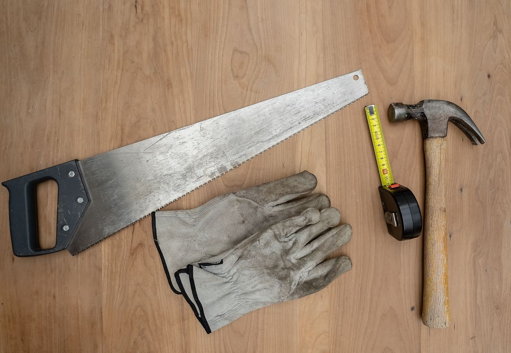
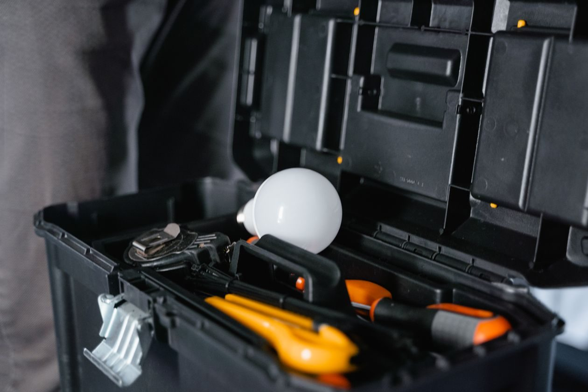

Handyman and maintenance in Biloxi
NERDS Handyman and Maintenance Services is a home repair specialist in Biloxi, offering cleaning, drywall installation, and painting posts on its Google Business page.

NERDS Handyman and Maintenance Services sits at 2123 McKenzie Ct in Biloxi. From the business's own Google Business page, the services are cleaning, drywall installation, plus painting posts on the page. The business describes itself as a home repair specialist.

2123 McKenzie Ct, Biloxi, MS 39532
Monday to Saturday, 9:00 AM to 6:00 PM; closed Sunday